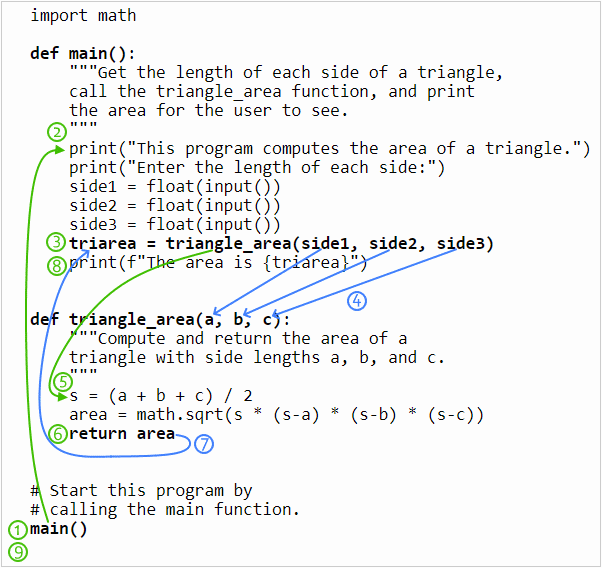

03 Prepare: Writing Functions
Because most useful computer programs are very large, programmers divide their programs into parts. Dividing a program into parts makes it easier to write, debug, and understand the program. A programmer can divide a Python program into modules, classes, and functions. In this lesson and the next, you will learn how to write your own functions.
Videos
Watch the following videos from Microsoft about writing functions:
- Introducing Functions (10 minutes)
- Demo: Functions (8 minutes)
- Parameterized Functions (7 minutes)
- Demo: Parameterized Functions (5 minutes)
Concepts
Here are the Python programming concepts and topics that you should learn during this lesson:
- A function is a group of statements that together perform one task. Broadly speaking, there are four types of functions in Python which are:
- Built-in functions
- Standard library functions
- Third-party functions
- User defined functions
- A user-defined function is a function that is not a built-in function, a standard function, or a third-party function. A user-defined function is written by a programmer like yourself as part of a program. For some students the term "user-defined function" is confusing because the user of a program does not define the function. Instead, the programmer (you) define user-defined functions. Perhaps a more correct term is programmer-defined function. Writing user-defined functions has several advantages, including:
- User-defined functions make your code more reusable.
- User-defined functions make your code easier to understand and debug.
- User-defined functions make your code easier to change or add capabilities.
- To write a user-defined function in Python, simply type code that matches this template:
def function_name(param1, param2, … paramN): statement1 statement2 ⋮ statementN return value - The first line of a function is called the header or signature, and it includes the following:
- the keyword
def(which is an abbreviation for "define") - the function name
- the parameter list (with the parameters separated by commas)
draw_circlethat takes three parameters namedx,y, andradius:You could read the previous line of code as, "Define a function nameddef draw_circle(x, y, radius):
draw_circlethat takes three parameters." - The function name must start with a letter or the underscore (_). The rest of the name must be made of letters, digits (0–9), or the underscore. A function name cannot include spaces or other punctuation. A function name should be meaningful and should describe curtly what the function does. Well-named functions almost always start with a verb.
- The parameter list contains data stored in variables that the function needs to complete its task. A parameter is a variable whose value comes from outside the function. One way to get input into a function is to ask the user for input by calling the built-in Python
inputfunction. Another way to get input into a function is through the function's parameters. Getting input through parameters is much more flexible than asking the user for input because the input through parameters can come from the user or a file on a hard drive or the network or a sensor or even another function. The statements inside a function are called the body of the function. Just like other block statements, such as
if,else,while, andfor, all of which end with a colon (:), you must indent the statements inside the body of a function. The body of a function should begin with a docstring which is a triple quoted string that describes the function's purpose, parameters and return value. The body of a function may contain as many statements as you wish to write inside of it. However, it is a good idea to limit functions to less than 60 lines of text.Example 1 contains a function named
print_cylinder_volume()that gets two numbers from the user: radius and height and uses those numbers to compute the volume of a cylinder and then prints the volume for the user to see.# Example 1 import math # Define a function named print_cylinder_volume. def print_cylinder_volume(): """Compute and print the volume of a cylinder.""" # Get the radius and height from the user. radius = float(input("Please enter the radius of a cylinder: ")) height = float(input("Please enter the height of a cylinder: ")) # Compute the volume of the cylinder. volume = math.pi * radius**2 * height # Print the volume of the cylinder. print(volume)Example 2 contains another version of the
print_cylinder_volumefunction. This second version doesn't get the radius and height from the user. Instead it accepts two parameters named radius and height.# Example 2 import math # Define a function named print_cylinder_volume. def print_cylinder_volume(radius, height): """Compute and print the volume of a cylinder. Parameters radius: the radius of the cylinder height: the height of the cylinder """ # Compute the volume of the cylinder. volume = math.pi * radius**2 * height # Print the volume of the cylinder. print(volume)Many functions that you've used in the past such as
input,float, andround, return a result. When a function returns a result, we usually store that result in a variable to use later like this:text = input("Please enter your name: ")To return a result from a function, simply type the keyword
returnfollowed by whatever result you want returned to the calling function. Example 3 contains a third version of the cylinder volume function. Notice that this third version returns the volume instead of printing it, which makes the function more reusable. In this third version, we changed the name of the function fromprint_cylinder_volumetocompute_cylinder_volumebecause this version doesn't print the volume but instead returns it.# Example 3 import math # Define a function named computer_cylinder_volume. def compute_cylinder_volume(radius, height): """Compute and return the volume of a cylinder. Parameters radius: the radius of the cylinder height: the height of the cylinder Return: the volume of the cylinder """ # Compute the volume of the cylinder. volume = math.pi * radius**2 * height # Return the volume of the cylinder so that the # volume can be used somewhere else in the program. return volume- In all previous Python programs that you wrote in CSE 110 and 111, you wrote statements that were not in a function like the simple program in example 4 where the statements are not inside the body of a function:
# Example 4 # Get a value in miles and convert it to kilometers. miles = float(input("Please enter a distance in miles: ")) km = miles * 1.60934 print(f"{miles} miles is {km} kilometers")However, writing statements outside of a function can lead to poor organization within a large program. Professional software developers write statements inside a function whenever possible. Beginning with this lesson, we will write nearly all statements inside a function. Also, each program will have a function named
mainwhich will contain the beginning statements of the program. In addition, we will have one or more functions that perform calculations and other useful work and return a value to the call point. Example 5 contains a complete program that has amainfunction that calls thecompute_cylinder_volumefunction:Notice the call to the# Example 5 # Define a function that accepts two parameters. def compute_cylinder_volume(radius, height): """Compute and print the volume of a cylinder. Parameters radius: the radius of the cylinder height: the height of the cylinder Return: the volume of the cylinder """ # Compute the volume of the cylinder. volume = math.pi * radius**2 * height # Return the volume of the cylinder so that the volume can # be used somewhere else in the program. The returned result # will be available wherever this function was called. return volume # Define the main function. def main(): # Create two variables to hold the radius and height. r = float(input("Enter the radius in centimeters: ")) h = float(input("Enter the height in centimeters: ")) # Call the compute_cylinder_volume function and store # its return value in a variable to use later. vol = compute_cylinder_volume(r, h) if vol < 1000: print(f"That cylinder holds {vol} cubic") print("centimeters, which is less than a liter.") else: print(f"That cylinder holds {vol} cubic") print("centimeters, which is a liter or more.") # Start this program by # calling the main function. main()mainfunction at line 41 in exmaple 5. Without that call to themainfunction, when we run the program, the program would not do anything. All of your future programs in CSE 111 will have a function namedmainand will have a call tomainat the bottom of the program. - While it's usually a good practice, you don't have to store the return value of a function in a variable. Sometimes you'll see it used directly as shown in example 6.
# Example 6 # Define the main function. def main(): # Create two variables to hold the radius and height. r = float(input("Enter the radius in centimeters: ")) h = float(input("Enter the height in centimeters: ")) # Call the compute_cylinder_volume function # and immediately print its return value. print( compute_cylinder_volume(r, h) ) # Call the compute_cylinder_volume function again # and use its return value in an if statement. if compute_cylinder_volume(r, h) < 1000: print("That cylinder holds less than a liter.") else: print("That cylinder holds a liter or more.") # Start this program by # calling the main function. main()Notice in the above example, we called the
compute_cylinder_volumefunction twice, once at line 11 to print the volume and again at line 15 to check if the volume is less than a liter.Every time we call a function, the code inside the function body is executed. In the previous example, because the arguments are the same radius and height at both lines 11 and 15, the result will be the same in both cases. So it would be faster to save the result in a variable and reuse the variable instead, as shown in example 7.#Example 7 # Define the main function. def main(): # Create two variables to hold the radius and height. r = float(input("Enter the radius in centimeters: ")) h = float(input("Enter the height in centimeters: ")) # Call the compute_cylinder_volume function and store # its return value in a variable to use later. vol = compute_cylinder_volume(r, h) print(f"The volume is: {vol}") if vol < 1000: print("That cylinder holds less than a liter.") else: print("That cylinder holds a liter or more.") # Start this program by # calling the main function. main() Some students have trouble visualizing what happens when the computer calls (executes) a function. The following code example is a complete program that includes several function calls. The green arrows in the example code show how the computer executes statements in one location and then jumps to execute statements in another function. The blue arrows show how data flows from arguments into parameters and from a returned result to a variable. The circled numbers show the order in which the events happen in the computer.
A computer will execute the statements in the previous example in this order:
- The statement at (1) is not inside of a function, so the computer executes it when the program begins. This is a call to the
mainfunction which causes the computer to begin executing the statements inside ofmainat (2). - The computer gets three numbers from the user.
- The statement at (3) is a call to the
triangle_areafunction. - The computer copies the values in the arguments side1, side2, and side3 into the parameters a, b, and c, respectively and then begins executing the statements inside the
triangle_areafunction at (5). - The computer computes the area of a triangle.
- The statement at (6) is a return statement which causes the computer to stop executing the
triangle_areafunction, to return a value to the call point at (3), and to resume executing statements at (8) after the call point. - The computer returns the value in the area variable to the call point (3). At the call point, the returned value is stored in the triarea variable.
- The computer prints the value that is in the triarea variable for the user to see. This is the last statement in the
mainfunction, so after executing it, the computer resumes executing the statements after the call point (1) to main. - There are no more statements after the call to
main, so the program is finished.
- The most reusable functions are ones that take parameters, perform calculations, and return a value but do not perform user input and output. In the previous code example, there are two functions:
mainandtriangle_area. Themainfunction is certainly useful in this program, but it is not reusable in other programs because it gets user input and prints the result for the user to see. Thetriangle_areafunction is very reusable in another program because it doesn't get user input or print output. Instead it takes three parameters, performs a calculation, and returns a result to the calling function. This second function is so reusable that it could be included in a library of functions that compute the area and volume of 2-D and 3-D geometric shapes.
It is extremely important that you can write and call functions. After watching the videos and reading the concepts related to writing a function, if the concepts still seem confusing or vague to you, watch the videos and read the list of concepts again.